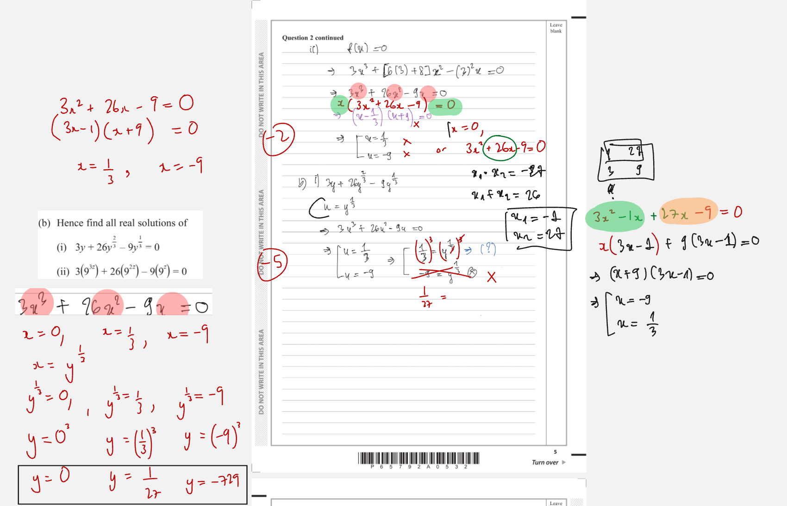

In this question you must show all stages of your working.
Solutions relying on calculator technology are not acceptable.$$f(x)=ax^3+(6a+8)x^2-a^2x$$
where $a$ is a positive constant.
Given $f(-1)=32$
(a) (i) show that the only possible value for $a$ is 3
(ii) Using $a=3$ solve the equation $f(x)=0$ (5)
(b) Hence find all real solutions of
(i) $3y+26y^{2/3}-9y^{1/3}=0$
(ii) $3(9^{3z})+26(9^{2z})-9(9^z)=0$ (5)
[10 marks: (a)(i) 3, (a)(ii) 2, (b)(i) 3, (b)(ii) 2]
Strategy and why. Substitute the stated input $x=-1$ directly into the given polynomial. Because $a$ is unknown, this creates a quadratic equation in $a$; solve it exactly and then use the printed positivity condition to select the admissible root.
Start with
$$f(-1)=a(-1)^3+(6a+8)(-1)^2-a^2(-1).$$Evaluate powers and signs before collecting terms:
$$-a+(6a+8)+a^2=32.$$Move $32$ to the left:
$$a^2+5a+8-32=0\quad\Longrightarrow\quad a^2+5a-24=0.$$To factor, find numbers with product $-24$ and sum $5$: $8$ and $-3$. Thus
$$a^2+5a-24=(a+8)(a-3)=0.$$So $a=-8$ or $a=3$. The question states that $a$ is a positive constant, so $-8$ is not permitted and
$$\boxed{a=3\text{ only}}.$$Check. With $a=3$, $f(-1)=-3+26+9=32$, exactly the stated value. With $a=-8$, the equation also holds algebraically, but it violates $a>0$. Transfer trigger: a “show the only possible value” question often needs both algebraic roots followed by an explicit domain or sign rejection.
Exam presentation. The positivity sentence is part of the proof: without it, the quadratic has two valid algebraic roots and “only possible” has not been established. Show the substitution, factorisation, both roots, and rejection in that order. This sequence makes the conclusion follow from the printed condition rather than appearing assumed.
Strategy and why. Substitute the established value $a=3$, factor out the common $x$, and solve the remaining quadratic exactly. Showing the factorisation is essential because the paper forbids calculator-only solutions.
Substitution gives
$$f(x)=3x^3+(6\cdot3+8)x^2-3^2x=3x^3+26x^2-9x.$$Set $f(x)=0$ and take out the common factor:
$$3x^3+26x^2-9x=0\quad\Longrightarrow\quad x(3x^2+26x-9)=0.$$For the quadratic, split the middle term using numbers with product $3(-9)=-27$ and sum $26$: $27$ and $-1$.
$$3x^2+27x-x-9=3x(x+9)-1(x+9)=(3x-1)(x+9).$$Therefore
$$x(3x-1)(x+9)=0,$$so
$$\boxed{x=0,\quad x=\frac13,\quad x=-9}.$$Check. The three roots correspond to the three linear factors. Expanding $(3x-1)(x+9)$ gives $3x^2+26x-9$, then multiplying by $x$ restores the cubic. Transfer trigger: for a polynomial with no constant term, factor out the variable before touching the remaining quadratic and keep the zero root in the final list.
Exam presentation. Because calculator technology is excluded, the factor line is essential evidence. Writing $x(3x-1)(x+9)=0$ displays both the common-factor decision and the solved quadratic, while a bare list of roots conceals the required algebra. State all three roots only after the zero-product factors are visible.
Strategy and why. The word “Hence” signals that the expression is the same cubic in disguise. Let $u=y^{1/3}$. For real $y$, the real cube root is defined for positive, zero, and negative values, and $y=u^3$, $y^{2/3}=u^2$.
Substitute these identities:
$$3u^3+26u^2-9u=0.$$This is exactly the equation solved in part (a)(ii), so
$$u=0,\quad u=\frac13,\quad u=-9.$$Now convert back using $y=u^3$, showing each value:
$$u=0\Rightarrow y=0^3=0,$$ $$u=\frac13\Rightarrow y=\left(\frac13\right)^3=\frac1{27},$$ $$u=-9\Rightarrow y=(-9)^3=-729.$$Hence all real solutions are
$$\boxed{y=0,\quad y=\frac1{27},\quad y=-729}.$$Check. For $y=-729$, $y^{1/3}=-9$ and $y^{2/3}=81$, giving $3(-729)+26(81)-9(-9)=0$. Transfer trigger: identify the repeated inner expression, name it with a temporary variable, solve using the earlier factorisation, and then reverse the substitution carefully.
Exam presentation. State $u=y^{1/3}$ and $y=u^3$ together. This makes the direction of substitution explicit and prevents the common reversal error of cube-rooting the $u$-values again. List every resulting real $y$-value, including zero and the negative cube, because real cube roots do not impose a positivity restriction.
Strategy and why. Again expose the same cubic by setting $u=9^z$. Then $9^{2z}=u^2$ and $9^{3z}=u^3$. Unlike a cube root, an exponential $9^z$ is strictly positive for every real $z$, so only positive roots of the cubic can survive.
The equation becomes
$$3u^3+26u^2-9u=0.$$From part (a)(ii), $u\in\{0,\tfrac13,-9\}$. But $u=9^z>0$, so $u=0$ and $u=-9$ are impossible. Therefore
$$9^z=\frac13.$$Write both sides with base $3$:
$$9^z=(3^2)^z=3^{2z},\qquad \frac13=3^{-1}.$$Equal positive bases give equal exponents:
$$2z=-1\quad\Longrightarrow\quad\boxed{z=-\frac12}.$$Check. If $z=-1/2$, then $9^z=1/3$, $9^{2z}=1/9$, and $9^{3z}=1/27$. The left side is $3/27+26/9-3=1/9+26/9-27/9=0$. Transfer trigger: after a substitution involving an exponential, enforce positivity before reversing it, then use a common base when possible.
Marked lesson evidence.

Exam presentation. Write the positivity rejection before solving for $z$. That separates the polynomial stage from the exponential stage and proves why there is only one real solution. The base conversion $9=3^2$ then produces an exact index equation without logarithms, calculator decimals, or unsupported rejection of roots.